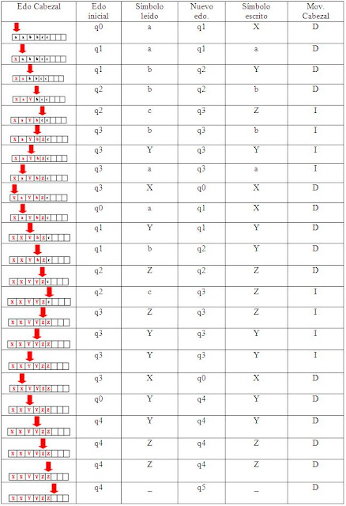
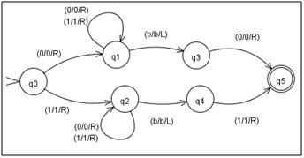
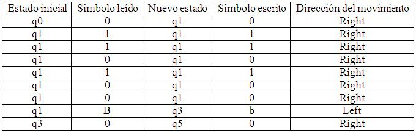
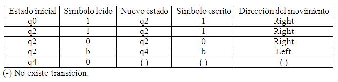

------------------------------------------------------------------------------------
Ejemplo 1

1. Se cambia la “a” por una X y se mueve hacia la derecha pasando por encima de todas las “a” e “Y”, hasta llegar a la primera “b”, cambia la primera “b” por una Y, se mueve a la derecha pasando por encima de las “b” y “Z”, y luego encuentra la primera “c” y la cambia por “Z” y se mueve a la izquierda.
2. Luego se mueve a la izquierda pasando por encima de “b”, “Y”, “a”, hasta encontrar la “X”, la reemplaza por una “X” y repite el proceso anterior, cuando la máquina reemplaza la cadena “X”, “Y” y “Z” reconoce la cadena vacía y busca el estado de aceptación.

Ejemplo 2
La siguiente máquina de Turing acepta el lenguaje de palabras sobre {0,1} que comienzan y acaban con el mismo símbolo. Para validar este lenguaje, se presentan dos cadenas, una que cumple la condición y otra que será rechazada por la máquina. Se muestra entonces la cadena del lenguaje descrito, aceptada: 0110100 (Estado de aceptación q5).

Las transiciones, y el proceso seguido en la evaluación y aceptación de una cadena dada, se resumen en la siguiente tabla

2. Cadena del lenguaje descrito, rechazada: 110
